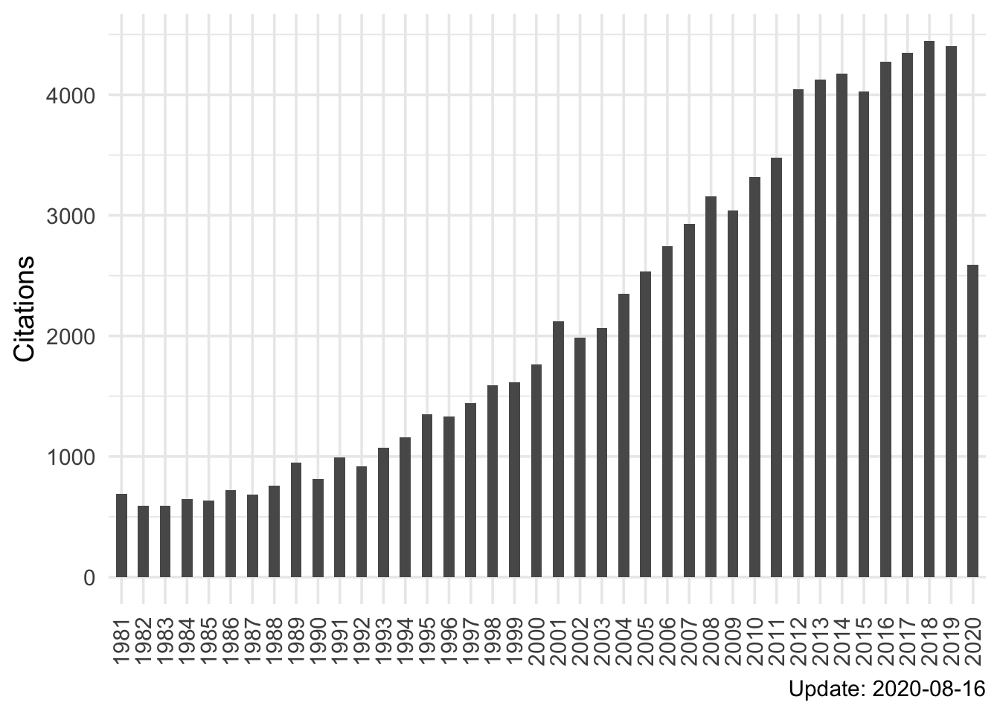
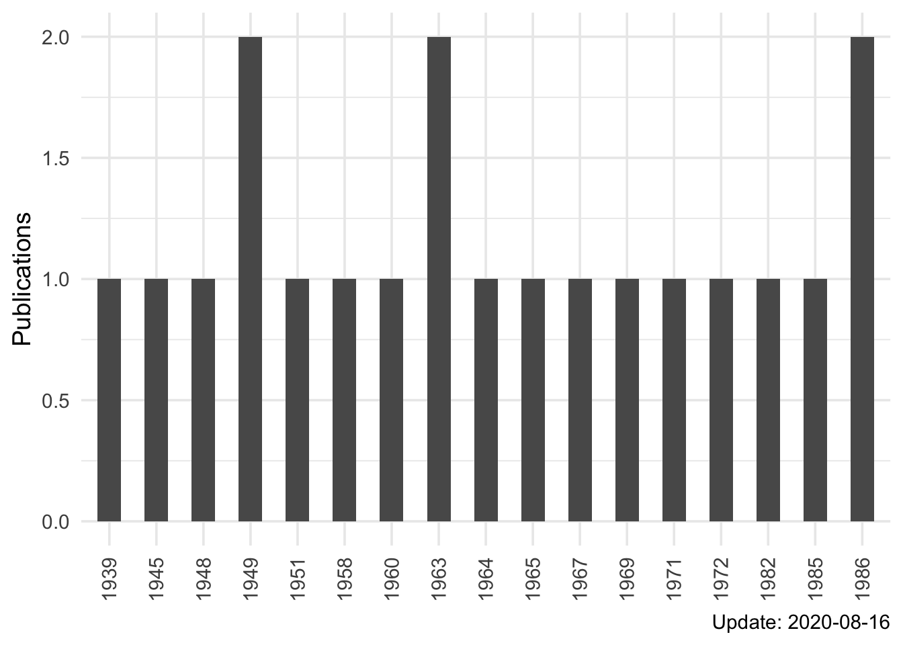

使用 tinyscholar 展示个人谷歌学术档案
王诗翔 · 2020-08-16
谷歌学术是目前感觉最好的学术搜索引擎，谷歌学术档案提供了学者的个人学术信息，不过通常情况我们无法查看和使用这个信息。Y 叔写的 scholar 包虽然提供了齐全的功能，但由于网络限制在国内基本无法使用。
如果我想要简单地获取和展示我的个人学术信息，这时候该怎么办？
通过搜索，我发现有人提供了一个用 php 写的访问接口，该接口可以根据谷歌学术 id 返回一段 json 格式的谷歌学术数据，包括引用数和出版物。数据虽然简单，但已经足够我的使用了。我进一步找到了对应的 GitHub 项目 地址，与 Openbiox 的剑锋交流后在 Hiplot 项目上也部署了一个相同的接口，方便调用。
受 scholar 包启发，我创建了一个名为 tinyscholar 的 R 包，用于解析数据和提供表格/图形可视化。
安装
# install.packages("devtools")
devtools::install_github("ShixiangWang/tinyscholar")
# devtools::install_git("https://gitee.com/ShixiangWang/tinyscholar")使用
类似 scholar 包，这里对 Richard Feynman 进行简单展示。
library(tinyscholar)
id <- "B7vSqZsAAAAJ"
profile <- tinyscholar(id)
#> Using cache directory: /var/folders/bj/nw1w4g1j37ddpgb6zmh3sfh80000gn/T//RtmprXOaXD/tinyscholar
#> Cannot find cache file /var/folders/bj/nw1w4g1j37ddpgb6zmh3sfh80000gn/T//RtmprXOaXD/tinyscholar/unsorted_2020-08-16_B7vSqZsAAAAJ.rds
#> Try quering data from server: hiplot
#> Save data to cache file /var/folders/bj/nw1w4g1j37ddpgb6zmh3sfh80000gn/T//RtmprXOaXD/tinyscholar/unsorted_2020-08-16_B7vSqZsAAAAJ.rds
#> Done
tb <- scholar_table(profile)
tb$publications| Publications | ||||
|---|---|---|---|---|
| title | authors | venue | citations | year |
| Quantum mechanics and path integration | RP Feynman, AR Hibbs | McGraw–Hill, 1965 | 27792 | 1965 |
| The Feynman lectures on physics | RP Feynman, RB Leighton, M Sands, SB Treiman | Physics Today 17, 45, 1964 | 15411 | 1964 |
| TheFeynman lectures on physics | RP Feynman, RB Leighton, M Sands, CA Heras, R Gómez, E Oelker, ... | Fondo Educativo Interamericano, cop., 1971 | 15222 | 1971 |
| Mainly mechanics, radiation, and heat | RP Feynman, RB Leighton, ML Sands | Addison Wesley Publishing Company, 1963 | 15070 | 1963 |
| Simulating physics with computers | RP Feynman | International journal of theoretical physics 21 (6), 467-488, 1982 | 8198 | 1982 |
| Space-time approach to non-relativistic quantum mechanics | RP Feynman | Reviews of Modern Physics 20 (2), 367, 1948 | 5010 | 1948 |
| There's plenty of room at the bottom | RP Feynman | Engineering and Science 23 (5), 22-36, 1960 | 4809 | 1960 |
| Forces in molecules | RP Feynman | Physical Review 56 (4), 340, 1939 | 4465 | 1939 |
| The character of physical law | R Feynman | MIT press, 1967 | 3319 | 1967 |
| Very high-energy collisions of hadrons | RP Feynman | Physical Review Letters 23 (24), 1415-1417, 1969 | 3240 | 1969 |
| Theory of the Fermi interaction | RP Feynman, M Gell-Mann | Physical Review 109 (1), 193, 1958 | 3115 | 1958 |
| The theory of a general quantum system interacting with a linear dissipative system | RP Feynman, FL Vernon | Annals of physics 24, 118-173, 1963 | 2835 | 1963 |
| QED: The strange theory of light and matter | RP Feyman | Universities Press, 1985 | 2683 | 1985 |
| Photon--hadron interactions | RP Feynman | WA Benjamin, Inc., Reading, MA, 1972 | 2471 | 1972 |
| Space-time approach to quantum electrodynamics | RP Feynman | Physical Review 76 (6), 769, 1949 | 2118 | 1949 |
| The theory of positrons | RP Feynman | Physical Review 76 (6), 749, 1949 | 1796 | 1949 |
| Interaction with the absorber as the mechanism of radiation | JA Wheeler, RP Feynman | Reviews of Modern Physics 17 (2-3), 157-181, 1945 | 1673 | 1945 |
| Surely You are Joking Mr Feynmanl: Adventures of a Curious Character | RP Feynman | Bantam Books, 1986 | 1584 | 1986 |
| Quantum-mechanical computers, Suc | R Feynman | Phys. Sci 149 (4), 671-688, 1986 | 1559 | 1986 |
| An operator calculus having applications in quantum electrodynamics | RP Feynman | Physical Review 84 (1), 108, 1951 | 1410 | 1951 |
| Update: 2020-08-16 | ||||
pl <- scholar_plot(profile, add_text = FALSE)
pl$citations + ggpubr::rotate_x_text()
pl$publications + ggpubr::rotate_x_text()
更为详细的介绍请查看在线文档。这里除了 tinyscholar() 这个核心函数用于获取和清理数据，生成一个列表，展示方面读者可以各显神通。